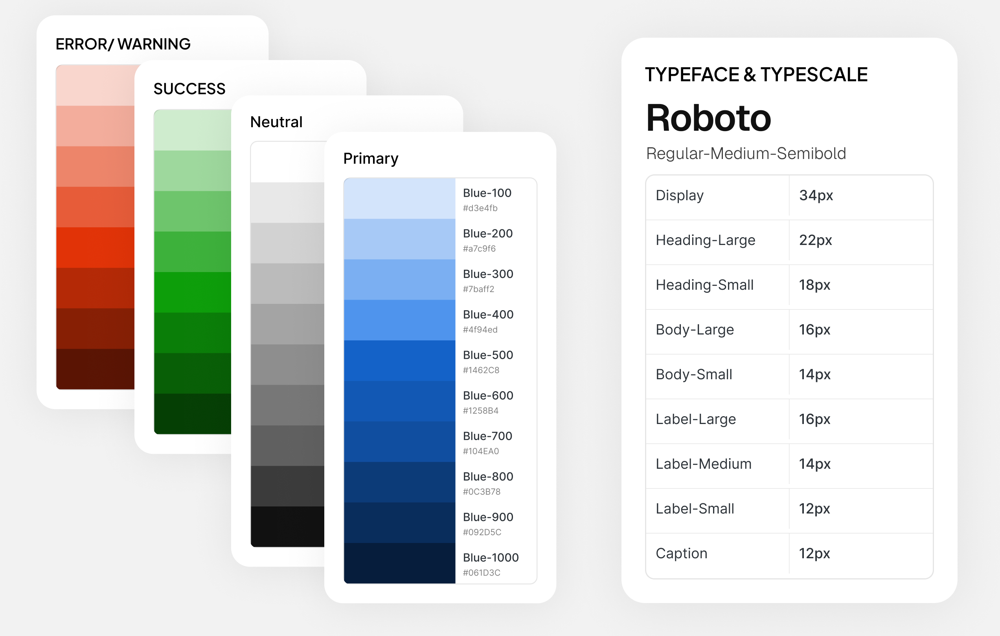
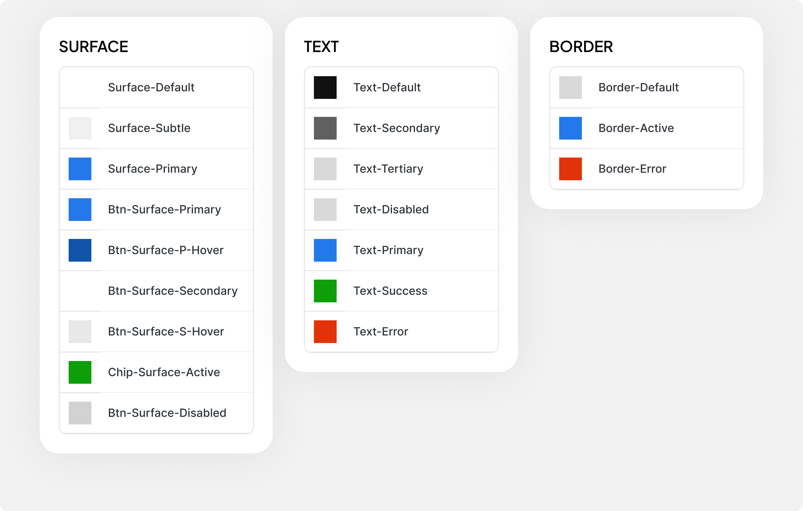
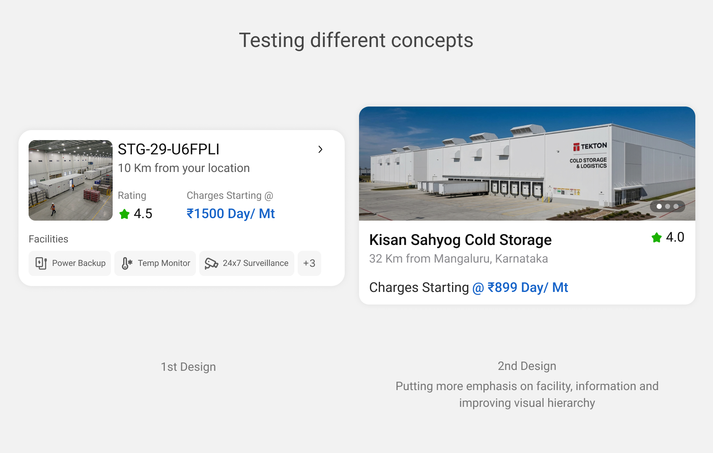
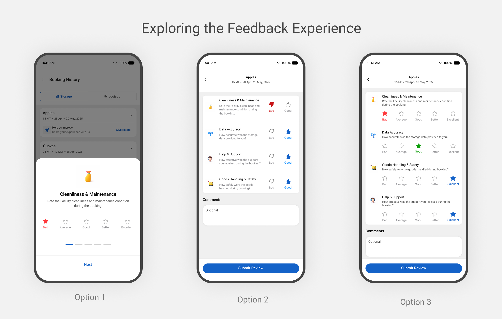

What is Sheet Bharat Mission?
India's perishable produce supply chain depends on reliable cold-chain infrastructure to
preserve agricultural produce beyond harvest. However, improving cold-chain capacity involves
more than establishing storage facilities—it also requires better coordination, access to
infrastructure information, and visibility across the supply chain.
To address these broader challenges, the National Centre for Cold-Chain Development (NCCD),
under the Government of India's Ministry of Agriculture & Farmers Welfare, works toward
strengthening integrated cold-chain infrastructure and promoting technological advancement
across the sector. As part of this broader vision, Sheet Bharat Mission aims to bring together
key stakeholders, including farmers, cold-storage operators, and logistics providers, through a
more connected cold-chain ecosystem. The initiative addresses the need for better visibility and
coordination across cold-chain infrastructure and operations.
How might we make cold-storage services more accessible and manageable through a connected digital experience?
The cold-chain ecosystem involves multiple stakeholders, operational dependencies, and geographic constraints that influence how storage services are accessed and managed. Fragmented processes and limited connectivity between these elements can create friction in coordinating storage requirements and managing services effectively.
Understanding the ecosystem, Defining the experience & Designing with intent.
Designing a product from the ground up meant working within an established cold-chain ecosystem,
where operational requirements and stakeholder needs shaped the experience. My approach focused
on understanding these constraints, breaking down the core journey, and translating requirements
into clear, purposeful interactions.
Rather than treating the product as a collection of screens, I approached it as a connected
system—considering how each interaction contributes to a coherent experience across discovery,
booking, and monitoring. So the following is the approach for designing this project.
Discover
Identify the user, problem, and context.
Define
Establish goals, scope, and constraints.
Design
Build foundations and design cohesive experiences.
Deliver, test & iterate
Ship the MVP, evaluate outcomes, and evolve.
1. Discover
Before defining the experience, I explored the cold-chain ecosystem, intended users, and requirements to understand the broader context shaping the product. business needs.
Understanding the Ecosystem
- The Mission: Strengthen India's cold-chain ecosystem by connecting infrastructure, stakeholders, and digital services.
- The Goal: Encourage greater adoption of cold-storage facilities by making them more accessible and easier to engage with.
- The Approach: Connect farmers with cold-storage operators and logistics providers through a unified digital ecosystem.
- Shared Value: Help facilities reach more potential customers, improve capacity utilization, and support sustainable business operations.
- The SBM Vision: Build a more connected and transparent cold-chain network that improves visibility, coordination, and value preservation across the supply chain.
Understanding the User
- Discover: Finding a suitable cold-storage facility within the relevant region.
- Availability: Determining whether the facility has suitable space available when needed.
- Cost: Understanding storage charges and associated transportation costs.
- Logistics: Finding a compatible vehicle to transport produce to and from the facility.
- Monitoring: Having visibility into the condition of stored produce throughout its storage and transportation journey.
2. Define
Design within the ecosystem. With the broader ecosystem and user journey understood, the next step was
to translate these considerations into a focused product experience. The established
requirements provided the foundation, while operational and business constraints shaped how
the experience could be designed.
MVP Scope
The MVP focused on three core experiences:
- Discover: Help users find suitable cold-storage & Logistic facilities.
- Book: Enable users to explore availability and book storage & Logistic services.
- Monitor Provide visibility into their storage journey and relevant conditions.
3.Design
1.Laying the foundations (Primitives, Semantics & Component Tokens)

2. Setting up design tokens

3. Creating a component Library
4.Deliver, Test & Iterate
Deliver : Used the established design system to create screens, templates, and interactive components that supported new feature development.
Test : Gather feedback from stakeholders, developers, and users to identify improvements and refine the designs based on their input.

Iterate : Evolving the design through feedback loops and creative exploration to deliver a flawless solution.

A clear foundation for the product experience
By identifying the key challenges within the cold-storage ecosystem and defining a focused MVP around Discover, Book, and Monitor, the product moved from a broad set of requirements to a clearly structured experience.
1. Exploring & booking facilities
2. Exploring & booking logistics
3. Monitoring storage facilities
4. Monitoring & tracking logistics
Moving from designing screens to thinking in systems
Working on this project changed how I approach product design. I learned that creating a consistent experience isn't just about designing individual screens, but about building systems that support the product as it grows.
1. Design systems are more than component libraries
I learned how foundations, semantics, and reusable components work together to
create
consistency,
improve maintainability, and support faster feature development.
2. Systems Thinking
Learned to view a product as a collection of interconnected systems, where
components,
workflows,
and information architecture work together to create a cohesive user experience.